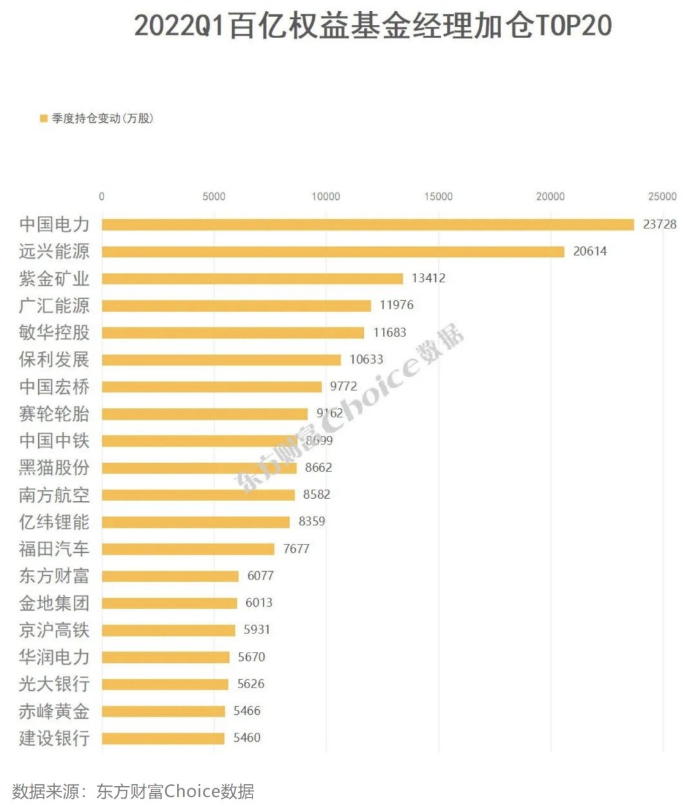

有个新兼职一天500
原创 V姐万事屋 V姐来了 2022-04-28 22:16 原文链接(长) 原文链接(短)Hi, 我是V姐。
杭州这两天出台了常态化核酸检测的政策，全市增加至少10000个核酸测点。
我看到杭州各个街道，在高薪诚聘核酸采样兼职医务工作者。
有的是长期工作，每天工作8小时，做六休一，薪酬1万/月；
也有的兼职做，一天8小时，300-500元/天的。
其中最高的是西溪街道，500一天，符合要求的朋友可以试一下。
杭州给的确实挺多，他们要求有医学相关背景，在校的医学生动起来呀。
我看到无锡也在招聘疫情管控的工作人员，招聘人数多达5000。
5000月薪，交社保，有工作餐，每天工作8小时。
这个收入虽然不算特别高，但是好在岗位门槛低，18-50岁即可，学历不限，工作经验不限。
颇有点‘以工代赈’的意思。
如果是今年因为疫情，暂时失去工作的服务业或者工厂的朋友，或者工作不好找的应届毕业生等，可以考虑过渡一下。
今年高校毕业生就1067万，就业形势很严峻。 **保就业稳增长**，是今年的最高优先级。之所以咬定5.5%的增长不放松，是因为1个点的GDP，对应200万就业岗位。
对于大部分朋友来说，今年找到理想工作的难度大增。先活下来再说，今年疫情背景下会诞生很多上面这种新岗位，大概率不少城市都会有，有需要的朋友可以关注一下当地官方公众号的信息发布。
最近市场和政策都很动荡，大新闻不少。
26号大大主持召开中央财经委员会第十一次会议，主题是 **搞基建。**
这个财经委规格非常高，是我国经济政策的顶层发布通道，说的都是言出必行的政策。
比如上一次会议，也就是第10次会议提出了共同富裕，防金融风险；
第9次会议是提出碳中和；
第8次是内循环。
那么本次会议指出，要加强水利网络建设，发展分布式智能电网， 加强信息、科技、物流等产业升级基础设施建设。这个里面直接收益的就是电力，基建，部分地产公司，以及金融业。
大家看，22年1季度，市场上百亿权益基金经理加仓top20，基本上围绕着电力，基建，能源，大金融等板块来。

基金经理们是不是都是看新闻联播买股票的？
今天我看到红塔红土的一只基金，非常有意思。它2月下旬清仓了，股票仓位0，拿着100%现金。
大家看这躺尸的一条直线，完美躲过3月的回调，4月下旬基金经理又慢慢加仓入场。近1个月收益是2.19%，这种行情下，这个月收益可谓非常出色了。
清仓躺平躲风险，大跌后再捡回来，不得不说，艺高人胆大，这个也是不少小基金的优势，船小好调头。
公募基金规模第一位的葛兰900多亿，第二位的张坤800多亿，骚操作是一个都搞不了，只能价值投资。
我们近期政策工具箱里的工具每天都在往外掏，今天又掏了2个：
股票交易过户费下调50%。这钱倒没有多少，主要是表明一个呵护的态度吧。
第二个是科技创新再贷款，基础货币增加2000亿，按照现在7的货币乘数，就是多投放1.4万亿，给到符合要求的科技企业，专精特新等，年化利息只要1.75%，可以说是非常低了。
今年虽然还没有全面降息，但是针对地产、小微企业以及科技企业的定向降息已经开始了。钱传导进终端产业会有一定的延后，预计2季度-3季度才会有体现。
另外，刺激消费今年也会发力，深圳派发5亿消费券，广东各市要出台政策。
 我估计上海解封后也会大力刺激消费，其他城市大概率跟进。毕竟有消费，才有需求，上游企业才愿意贷款，保生产才能保住就业，否则到头来信贷宽松最终又都流进房地产了。
消费赛道的话，白酒，尤其是茅台，依然是风向标，茅台这3个交易日反弹了7.5%。目前，茅台占我自己仓位的10%。
今天看到中介发的文案，好房标准加上了疫情物资发放次数。
看来以后还要考虑居委是不是给力，物业是不是临危不惧，保安是不是送货快。话说今天我认识的中介，真的发了我一份上海居委红黑榜。
我打开一看，描述真是生动有趣，栩栩如生，体现了人民群众语言的多样性。
不信我给你们展示一个：
然后想起我们好像除了霉酱鸭，也没发过正经肉啊，笑着笑着要哭了。
我估计上海解封后也会大力刺激消费，其他城市大概率跟进。毕竟有消费，才有需求，上游企业才愿意贷款，保生产才能保住就业，否则到头来信贷宽松最终又都流进房地产了。
消费赛道的话，白酒，尤其是茅台，依然是风向标，茅台这3个交易日反弹了7.5%。目前，茅台占我自己仓位的10%。
今天看到中介发的文案，好房标准加上了疫情物资发放次数。
看来以后还要考虑居委是不是给力，物业是不是临危不惧，保安是不是送货快。话说今天我认识的中介，真的发了我一份上海居委红黑榜。
我打开一看，描述真是生动有趣，栩栩如生，体现了人民群众语言的多样性。
不信我给你们展示一个：
然后想起我们好像除了霉酱鸭，也没发过正经肉啊，笑着笑着要哭了。
我估计上海解封后也会大力刺激消费，其他城市大概率跟进。毕竟有消费，才有需求，上游企业才愿意贷款，保生产才能保住就业，否则到头来信贷宽松最终又都流进房地产了。
消费赛道的话，白酒，尤其是茅台，依然是风向标，茅台这3个交易日反弹了7.5%。目前，茅台占我自己仓位的10%。
今天看到中介发的文案，好房标准加上了疫情物资发放次数。
看来以后还要考虑居委是不是给力，物业是不是临危不惧，保安是不是送货快。话说今天我认识的中介，真的发了我一份上海居委红黑榜。
我打开一看，描述真是生动有趣，栩栩如生，体现了人民群众语言的多样性。
不信我给你们展示一个：
然后想起我们好像除了霉酱鸭，也没发过正经肉啊，笑着笑着要哭了。